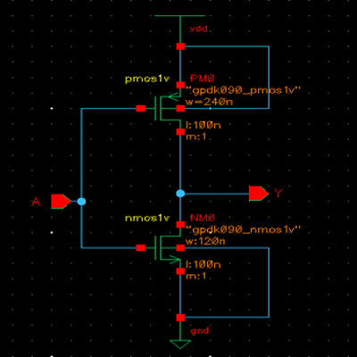
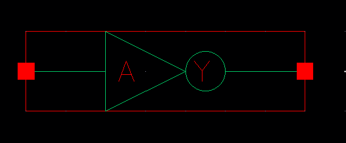
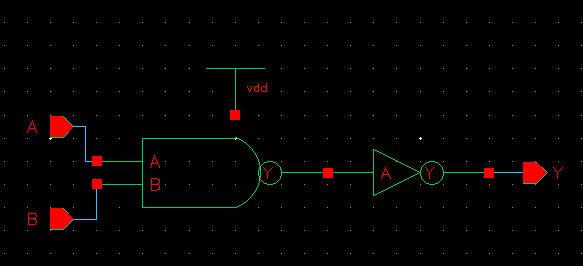
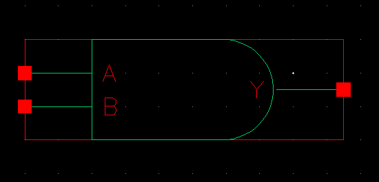
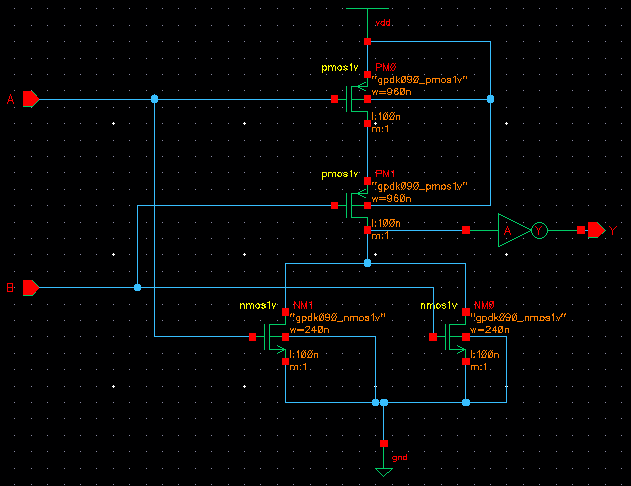
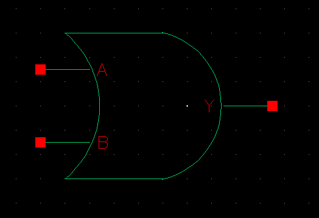
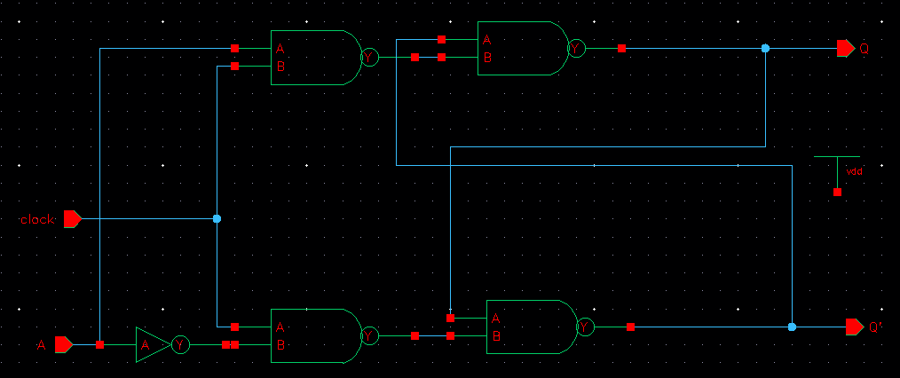
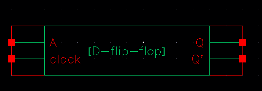
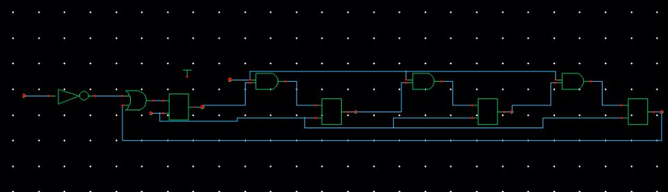
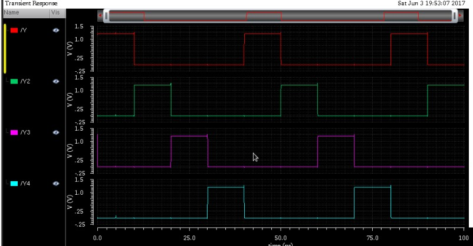

4 Bit Ring Counter
Schematic Diagram of NOT Gate

Symbol of NOT Gate

Schematic Diagram of NAND Gate

Symbol of NAND Gate

Making AND Gate using NAND Gate & NOT Gate

Symbol of AND Gate

Schematic Diagram of OR Gate

Symbol of OR Gate

Schematic Diagram of XNOR Gate

Symbol of XNOR Gate

Schematic Diagram of XOR Gate

Symbol of XNOR Gate
